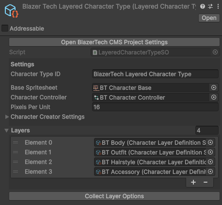
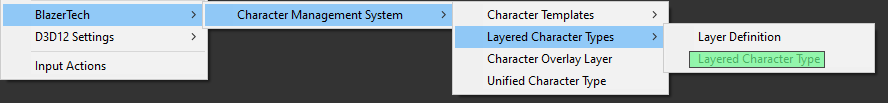

Layered Character Type
A Layered Character Type defines how a Layered Character is structured.
It contains the core data shared by all characters of that type, such as the Base Spritesheet, Animator Controller, and the list of Character Layers that make up the character.

Layered Characters
A Layered Character is built from multiple spritesheet layers stacked on top of each other.
Each layer represents a different visual component of the character.
All layers must follow the same spritesheet layout:
- Same spritesheet size
- Same frame sizes
- Same frame positioning
Because every layer shares the same spritesheet layout, all layers align perfectly when stacked together.
Example Layered Character:
- Body
- Outfit
- Hairstyle
- Accessory
The final character is rendered by combining all layers in order.
Create Layered Character Type Asset
To create a new Layered Character Type:
Right clickthe Project window- Navigate to: Create > BlazerTech > Character Management System > Layered Character Type

Character Type Setup
A Layered Character Type uses the same core properties shared by all Character Types.
| Property | Type | Description |
|---|---|---|
| Character Type ID | String | A unique identifier |
| Base Spritesheet | Sprite | The character spritesheet used by all characters |
| Animator Controller | RuntimeAnimatorController | Single Animator Controller for all characters |
| Pixels Per Unit | int | PPU of your Base Spritesheet |
Read Character Type Setup for a step-by-setup guide on how to setup each field.
Character Layers
The Layered Character Type also defines the layers used to build the character.
Each entry in the Layers list references a Character Layer Definition asset.
A Character Layer Definition describes how a single layer behaves, including:
- Layer Name
- Whether the layer can be blank
- The available Layer Options (Spritesheets)
Example layers: Body, Outfit, Hairstyle, Accessory
Each layer corresponds to one spritesheet that is combined during rendering.
Create Character Layer Definitions
To create a Character Layer Definition:
Right clickthe Project window- navigate to: Create > BlazerTech > Character Management System > Layered Character Types > Layer Definition

Create a Layer Definition for each layer you want your characters to have.
Assign Layers
After creating the Layer Definitions:
- Open your Layered Character Type
- Add each Layer Definition to the Layers list

The order of the layers in this list determines the render order.
Layers are rendered from top to bottom in the list, meaning:
- Top of List = Rendered First (Behind)
- Bottom of List = Rendered Last (In Front)
Read Character Layer Definitions to learn how to setup each Character Layer Definition.
Creating Layered Characters
Once your Layered Character Type and Character Layers are configured, you can begin creating characters.
Layered Characters can be created in several ways:
- Layered Character Templates (Simplest workflow)
- Random Character Generation
- Runtime creation through C#
Runtime Creation through C#
Create Default Layered Character
This creates a new Layered Character using the default Layer Options for each Layer.
using BlazerTech.CharacterManagement.Characters;
using UnityEngine;
public class CreateDefaultLayeredCharacter : MonoBehaviour
{
[SerializeField] LayeredCharacterTypeSO characterType;
LayeredCharacter character;
private void Start()
{
character = new LayeredCharacter("layered-character", characterType, "Layered Character");
}
}
Create Randomized Layered Character
This creates a new Layered Character and grabs a completely random Layer Option for each Layer.
using BlazerTech.CharacterManagement.Characters;
using UnityEngine;
public class CreateRandomizedLayeredCharacter : MonoBehaviour
{
[SerializeField] LayeredCharacterTypeSO characterType;
LayeredCharacter character;
private void Start()
{
character = new LayeredCharacter("layered-character", characterType, "Layered Character", LayeredCharacterCreationMode.RandomizedLayerOptions);
}
}
Create Layered Character With Specific Options
This creates a new Layered Character by grabbing the second layer option for every layer if available, if not the first layer option is grabbed instead.
using BlazerTech.CharacterManagement.Characters;
using System.Collections.Generic;
using UnityEngine;
public class CreateLayeredCharacter : MonoBehaviour
{
[SerializeField] LayeredCharacterTypeSO characterType;
LayeredCharacter character;
private void Start()
{
List<CharacterLayerOption> layerOptions = new();
foreach (var layer in characterType.Layers)
{
var layerOption = layer.GetLayerOptionFromIndex(1);
layerOption ??= layer.GetLayerOptionFromIndex(0);
layerOptions.Add(layerOption);
}
character = new("layered-character", characterType, layerOptions, "Layered Character");
}
}